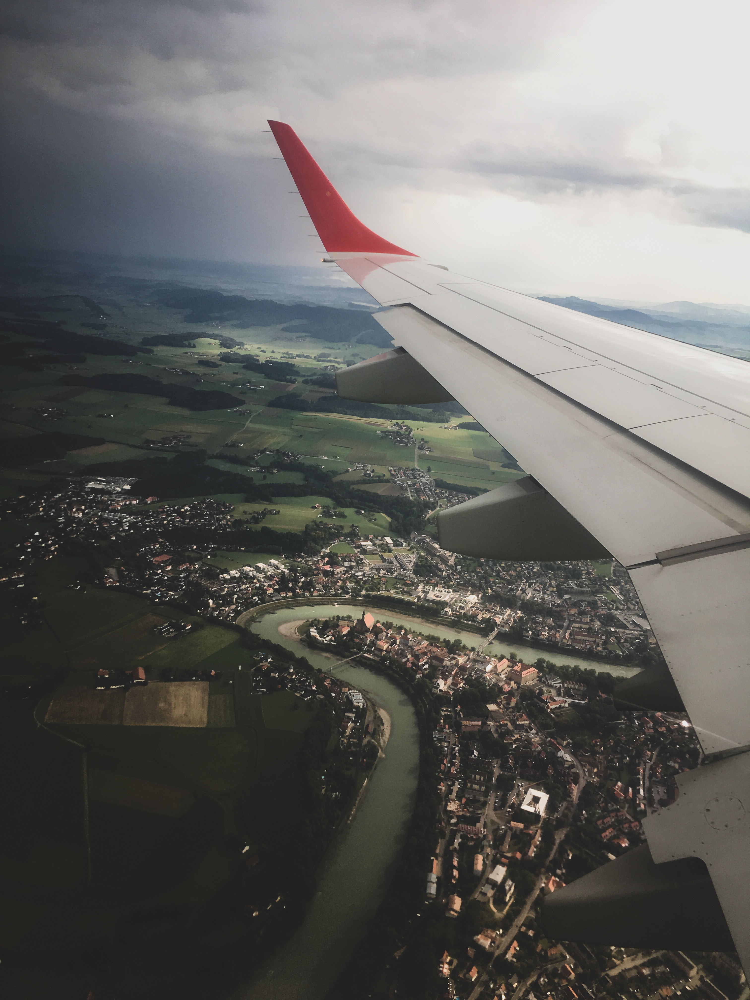

Die Stadt Salzburg kennt man als Geburtsort und Wirkungsstätte von Wolfgang Amadeus Mozart und als Drehort von „Sound of Music“. Man liebt die engen Gässchen und die weiten Plätze der von der UNESCO zum Weltkulturerbe er-klärten Altstadt, die Salzburger Nockerl, die Salzburger Festspiele und das herr-liche Bergpanorama. Die barocke Stadt ist ein harmonisches Zusammenspiel von Landschaft und Architektur, Kunst und Kultur, Tradition und Moderne auf kleinstem Raum. Herrlich klein, schöngeistig und dennoch mondän. Salzburg war bereits zur Römerzeit eine bedeutende Verwaltungsstadt an einer wichtigen Heerstraße und Nord-Süd-Verbindung. Gegründet gegen Ende des 7. Jahrhunderts wurde die Stadt bis zu Beginn des 19. Jahrhunderts von unabhängigen katholischen Fürsterzbischö-fen regiert, die auch die politische Macht innehatten. Reichtum und Wohlstand sind auf den Handel mit dem Salz zurückzuführen, dessen Einkünfte es den Landesherren ermöglichte, eine Stadt zu erbauen, die mit ihrem italienischen Flair als das „Rom des Nordens“ bezeich-net wird. Das „weiße Gold“, das Salz, verlieh der Stadt ihren Namen.
Ein Spaziergang durch die von Mönchsberg, Festungsberg und Kapuzinerberg eingerahmte und durch den Fluss geteilte Stadt lässt Gäste und Besucher Geschichte atmen und gewährt überraschend moderne Einblicke. Die Fakten sind liebenswert und beeindruckend zugleich. Salzburg zählt knapp 150.000 Einwohner, jedoch mehr als 4.500 Kulturveranstaltungen jährlich und an die 20 barocke Kirchenbauten. Den internationalen Ruhm verdankt Salzburg dem unvergleichbaren Charme ihres Stadtbildes, das die UNESCO dazu veranlasste, die Salzburger Altstadt in die Weltkulturerbeliste als besonders schützenswert aufzunehmen.
Der berühmteste Sohn der Stadt verzaubert bis heute Musikliebhaber aus aller Welt. Wolf-gang Amadeus Mozart wurde am 27. Januar 1756 in der Getreidegasse 9 geboren. Sein Geburtshaus erstrahlt seit 2010 mit vier modernen Dauerausstellungen in neuem Glanz. Es zählt zu den meistfotografierten Motiven und den bestbesuchten Museen weltweit. In Salzburg komponierte Mozart über 350 seiner schönsten Werke und es wurde der Grundstock zu sei-ner einzigartigen Karriere gelegt, die Mozart zu dem machte, was er heute unumstritten ist: Der Welt bedeutendster und meist gespielter Komponist, der mit seiner Musik ein neues Kapi-tel in der Musikgeschichte aufschlug.
„Die Atmosphäre von Salzburg ist durchdrungen von Schönheit, Spiel und Kunst …“, meinte schon Max Reinhardt, Theaterregisseur und Hauptinitiator der Salzburger Festspiele. 1920, kurz nach dem Ersten Weltkrieg, verwirklichte Max Reinhard gemeinsam mit anderen in Salz-burg ansässigen Künstlern und Intellektuellen seinen Traum, die ganze Stadt in eine Bühne zu verwandeln. Mit der Gründung der Salzburger Festspiele erfuhr die Stadt Salzburg einen wesentlichen Impuls in Richtung Internationalisierung, der bis heute anhält. Der „Jedermann“ – das erste Stück der Festspiele – ist bis heute unverzichtbarer Bestandteil eines der hoch-karätigsten Musikfestivals Europas. Der weltberühmte Dirigent Herbert von Karajan, am 5. April 1908 in Salzburg geboren, gründete 1967 die Osterfestspiele und 1973 die Pfingstfest-spiele, deren hohes Niveau Jahr für Jahr tausende Kunst- und Kulturliebhaber zu schätzen wissen.
Auch Hollywood hat seine Spuren in der Stadt hinterlassen. Einer von drei Japanern hat ihn gesehen, für drei Viertel aller Touristen aus den USA ist er einer der wichtigsten Gründe für ihren Salzburgbesuch und die Melodien sind mittlerweile international bekanntes Liedgut: Die Rede ist von dem mit fünf Oscars gekrönten Film „The Sound of Music“, der sich seit sei-nem Kinostart 1965 ungebrochener Beliebtheit erfreut. „The Sound of Music“ wurde in der Stadt Salzburg und in ihrer unmittelbaren Umgebung gedreht, noch heute können die Drehorte besucht werden. 2011 feierte das Musical im Salzburger Landestheater Premiere und wird auch im Marionettentheater aufgeführt.
Hoch über der Stadt auf dem Festungsberg thront die Festung Hohensalzburg, eine der größten Burganlagen Europas aus dem 11. Jahrhundert. Neben spannenden Einblicken in die Baugeschichte der imposanten Wehranlage bietet die mittelalterliche Burg samt neuzeitli-cher Festung ein wunderbares 360-Grad-Panorama über die Dächer der Mozartstadt sowie in die umliegende Bergwelt. Zu den Besuchermagneten zählen neben den prunkvollen Fürs-tenzimmern und dem Reckturm die abendlichen Festungskonzerte in stillvollem Ambiente. Unterhalb des Mönchsberges liegt der Festspielbezirk mit dem Großen Festspielhaus und dem Haus für Mozart. Da findet man das mittelalterliche Salzburg mit seinen Bürgerhäusern und engen Gassen. Die berühmte Getreidegasse zählt zu den schönsten Einkaufsmeilen der Welt. Der Klosterbezirk St. Peter schmiegt sich eng an den Festungsberg und beher-bergt den wohl schönsten Friedhof der Stadt. Daneben besticht die Grandezza des Doms mit seiner mächtigen Kuppel und der prachtvollen Fassade aus Untersberger Marmor.
Puristisch, schlicht und beeindruckend bildet die großzügige Architektur des „Museum der Moderne“ am Mönchsberg ein reizvolles Gegenstück zur historischen Altstadt. Auf vier Ebe-nen werden thematische Ausstellungen der Kunst des 20. und 21. Jahrhunderts gezeigt. Atemberaubend der Blick von der Terrasse des vom internationalen Star-Architekten Matteo Thun ausgestatteten Restaurants „m32“. Über 50 Galerien bieten Besuchern mit Bildern und Skulpturen bis hin zu Druckgraphiken und Schmuck Kunst in allen Facetten. Über 20 Museen haben ihre Pforten für Salzburgbesucher geöffnet: Darunter das Salzburg Museum, das Museum der Moderne, das Haus der Natur, das DomQuartier, das Mozart-Wohnhaus oder das Festungsmuseum. Völlig kostenlos können die modernen und beeindruckenden Kunstwerke des „Walk of Mo-dern Art“ auf den öffentlichen Plätzen der Stadt besichtigt werden, darunter Meisterwerke von Anselm Kiefer oder Markus Lüpertz.
Auf der anderen Seite der Salzach liegt der Kapuzinerberg, auf dem man das Ende des 16. Jahrhunderts gegründete Kapuzinerkloster nach einem kurzen Anstieg erreicht. Ein Besuch führt am ehemaligen Haus des Schriftstellers Stefan Zweig vorbei. Eine atemberaubende Ku-lisse, nicht nur für Brautpaare, bietet der barocke Mirabellgarten, dessen Schloss mit dem Marmorsaal Europas schönsten Trauungssaal beherbergt.
Kleine Läden und Manufakturen halten eine bisweilen uralte Tradition aufrecht. Bäckermeister und Kürschner, Likörerzeuger und Weber, Konditoren und Schneider beleben die schmalen Gassen mit ihren romantischen Innenhöfen. Diese klassischen Einkaufsadressen in der Altstadt von Salzburg umfassen Spirituosenläden, eine Schirmmanufaktur sowie ein kleines Eldorado für Käse-Liebhaber. Aber auch feinstes Leder und zarte Spitze findet man in Salz-burgs Altstadt. Tradition und Moderne zeigen sich in Salzburg nicht nur in Gastronomie, Kultur und Architektur sondern auch im Shoppingerlebnis der Stadt. Neben traditionsreichen und historischen Geschäften präsentieren sich internationale Modelabels, namhafte, moderne Luxusläden sowie junge Designer.
Das Jahr wird in Salzburg kulturell mit der international bekannten Mozartwoche eingeläutet. Musikliebhaber kommen Ende Januar in den Genuss eines Mozartfestivals auf höchstem internationalen Niveau mit fantastischen Solisten und Dirigenten und weltbekannten Orches-tern wie etwa den Wiener Philharmonikern, dem Concentus Musikus, der Camerata Salzburg und dem Mozarteumorchester. Mit den Oster- und Pfingstfestspielen erlebt man in Salzburg einen kulturellen Frühling auf höchstem Niveau. Die Sommerfestspiele im Juli und August zählen zu den hochkarätigsten Musikfestivals der Welt und sind Besuchermagnet für interna-tionale Kunstliebhaber und viel Prominenz. Die sommerszene im Juni und eine Vielzahl von Vernissagen und Ausstellungen widmen sich dem zeitgenössischen Kulturgenuss in der Stadt. Im Herbst lädt Salzburg zu Jazz & The City mit internationalen Musikern in die Altstadt ein. Die stillste Zeit im Jahr wird vom Salzburger Adventsingen im Großen Festspielhaus, dem Salzburger Advent in der Andräkirche und dem Winterfest begleitet. Ganzjährig bieten das Salzburger Marionettentheater, die Schlosskonzerte im Schloss Mirabell, die Festungskon-zerte in den Fürstenzimmern auf der Festung Hohensalzburg, „Mozart in Residenz“ sowie die Mozart Dinner Konzerte im Stiftkeller St. Peter ein abwechslungsreiches Programm.
An Lokalen für jeden Geschmack hat Salzburg eine ganze Menge zu bieten: Von der Bar hoch über den Dächern Salzburgs, dem romantischen Straßencafé oder dem trendigen Beisl bis hin zum Gourmettempel. Liebhaber gepflegter Gastronomie und Kulinarik auf höchstem Niveau finden in Salzburg ein wahres Eldorado. Nur wenige Orte in Österreich bieten auf so geringer Fläche eine derartige Auswahl an haubenprämierten Restaurants und international bekannten und ausgezeichneten Köchen. Mit zehn Brauereien, darunter die größte Privat-brauerei Österreichs, gilt Salzburg auch als Bierhauptstadt des Landes.
Die historisch gewachsenen Christkindlmärkte am Dom- und Residenzplatz laden ab Ende November bis zum Weihnachtsfest zum romantischen Winterzauber in der Altstadt ein. An den Ständen gibt es feine kulinarische Köstlichkeiten sowie traditionelles Handwerk aus Salz-burg und Umgebung. Der Hellbrunner Adventszauber begeistert mit stimmungsvoller Atmo-sphäre vor der malerischen Kulisse von Hellbrunn. Kleinere Nebengebäude, der Vorplatz und sogar das Schloss selbst mit dem angrenzenden Park sind für Besucher geöffnet und laden zum Flanieren und Gustieren ein. Kleinere Märkte gibt es im Sterngarten, am Mirabellplatz, auf der Festung Hohensalzburg sowie im Stift St. Peter. In Oberndorf, unweit der Stadt Salzburg, wurde 1818 das weltberühmte Lied „Stille Nacht, heilige Nacht“ uraufgeführt. Joseph Mohr, der Verfasser des Textes, wurde in Salzburg geboren und ging hier zur Schule. Das Stille-Nacht-Autograph, die original Handschrift des Liedes, kann im Salzburg Museum besichtigt werden. Während der Adventzeit finden in Salzburg zahlreiche weihnachtliche Veranstaltun-gen statt.
Die Natur streckt ihre grünen Fühler weit in die Stadt Salzburg. An allen Ecken und Enden gibt es wunderbare Gärten und Parks, in denen man die Sonne und das Leben genießen kann. So etwa den Furtwänglerpark im Festspielbezirk, den Mirabellgarten, die Hellbrunner Allee oder die grünen Wiesen an der Salzach. Wer es sportlich liebt und in kurzer Zeit möglichst viel von Stadt und Umgebung sehen will, der leiht sich am besten ein Fahrrad. Salzburg zählt zu Österreichs fahrradfreundlichsten Städten und bietet ein hervorragend ausgebautes Rad-wegenetz. Die Distanzen sind gering und neben der sportlichen Betätigung gelangt man in den Genuss, die Sehenswürdigkeiten vor den Toren der Stadt erkunden zu können: So etwa das Schloss Leopoldskron mit dem Weiher, den Aigner Park oder das Schloss Hellbrunn mit sei-nem weitläufigen Lustgarten. Der Untersberg in Grödig bietet Besuchern die Möglichkeit, von 1.776 Metern Seehöhe auf die Stadt zu blicken. Den Gipfel des mächtigen Hausberges er-reicht man mit der Untersbergbahn von St. Leonhard. Der Gaisberg, im Osten der Stadt, lädt mit einem aussichtsreichen Rundwanderweg, Mountainbikestrecken und einem Startplatz für Paraglider zum sportlichen Kurzausflug ein. Die Idylle des Landes und die Nähe zur Stadt gewährleisten die Salzburger Umgebungsorte Grödig, Hallwang, Anif, Wals-Siezenheim, Eugendorf, Bergheim, Anthering, Elixhausen, Elsbethen und Großgmain, in denen Salzburg-besucher eine große Vielfalt an Unterkünften und ein breites gastronomisches Angebot vor-finden.
Mit der Paris-Lodron-Universität, Universität Mozarteum, Private Medizinische Universität sowie der Salzburg Management Business School ist Salzburg eine anerkannte Hoch-schulstadt. Salzburg ist Sitz der Europäischen Akademie der Wissenschaften. Der berühmte Maler Oskar Kokoschka gründete in Salzburg die „Schule des Sehens“, heute bekannt unter dem Namen „Internationale Sommerakademie“. Zum Renommee als Kongressstadt hat das moderne Kongresszentrum Salzburg Congress im Herzen der Mozartstadt beigetragen. Das Kongresshaus war einer der ersten Betriebe, der Green Meeting-zertifiziert wurde. Zeichen für den internationalen Stellenwert Salzburgs ist die Tatsache, dass die Stadt – nach der Bundeshauptstadt Wien – über die meisten konsula-rischen Vertretungsbehörden verfügt. Seitens der Politik werden intensive Kontakte zu den Konsulaten gepflegt, wobei die Zusammenarbeit die behördlichen Agenden ebenso wie die gegenseitige Unterstützung bei wissenschaftlichen, wirtschaftlichen und touristischen Aktivitä-ten umfasst. Der zentralen Lage, den günstigen Verkehrsanbindungen mit Bahnhof und Airport sowie der Schönheit der Stadt verdankt Salzburg die große touristische Bedeutung. Im Jahr 2017 wurden zum ersten Mal über drei Millionen Nächtigungen verzeichnet. Der gesamtwirtschaftli-che Effekt beläuft sich auf eine geschätzte Milliarde Euro und liegt bei rund 20 Prozent des lokalen Bruttosozialproduktes. Die Tourismusbranche sichert ca. 10.000 Arbeitsplätze in der Stadt.
Quelle: Salzburg.info/Presse
Mit mehr als 1.8 mio. Passagieren jährlich zählt der Wolfgang Amadeeus Mozart Airport in Salzburg zu den größten Flughäfen in Österreich. 30 Airlines bieten schnelle Flugverbindungen zu 156 Desitnationen auf dem gesamten Globus. Finden Sie den schnellsten und entspanntesten Weg in die Stadt der Musik.
|  |
Flugankünfte W.A.Mozart Airport Salzburg |